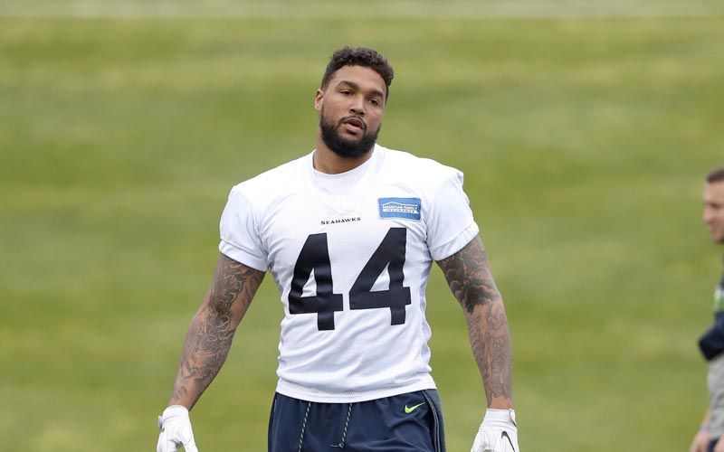

18 Male Athletes and Celebrities who’ve Talked About the Value of Therapy
High profile men sharing their personal experiences with talk therapy to combat the misconceptions about what professional therapy is really like.
High profile men sharing their personal experiences with talk therapy to combat the misconceptions about what professional therapy is really like.
“Reaching out is a sign of strength and resilience.”
Although more and more guys are speaking up about the importance of mental health, and knowing when to reach out for support, there are still a lot of misconceptions about what professional therapy is really like.
During #MensHealthWeek, from June 14th-June 20th, we’re sharing information and stories about the benefits of therapy and how reaching out is a sign of strength and resilience, not weakness. Hiding emotions and keeping things bottled up inside just doesn’t work.
In this post, we’re putting a spotlight on some highly accomplished men, who have spoken openly about their experiences seeking professional help from a therapist.
“In the short time I’ve been meeting with the therapist, I’ve seen the power of saying things out loud in a setting like that… I went to my first appointment with the therapist with some skepticism. I had one foot out the door. But he surprised me…
We talked about a range of non-basketball things, and I realized how many issues come from places that you may not realize until you really look into them. I think it’s easy to assume we know ourselves, but once you peel back the layers it’s amazing how much there is to still discover.”
In his powerful 2018 essay, Everyone Is Going Through Something, five time NBA All-Star Kevin Love detailed his personal struggles with anxiety and depression, and disclosed that he had been regularly attending therapy after experiencing a sudden mid-game panic attack. Since then, Love has become a major therapy and mental health advocate within professional sports.
Kevin Love | American professional basketball player, five-time All-Star, and NBA championship winner
Kevin Love on How to Find the Right Therapist, and What to Do If You Can’t Afford One
Kevin Love’s 2018 Essay, Everyone Is Going Through Something
“The talking cure – it works. But you’ve got to commit yourself to a process…I enjoyed the investigative examination of issues in my life that I didn’t understand. I learned a lot and therefore was able to exploit what I had learned and turn it into a real life.”
Bruce Springsteen, 71-year-old music legend, has written about his decades of struggle with depression, his difficult relationship with his father, and how talk therapy and antidepressants have improved his life. Springsteen first started seeing a psychotherapist in the early 1980s, and still sees a therapist today.
Bruce Springsteen | American singer, songwriter, and musician, solo artist, and the leader of the E Street Band
Bruce Springsteen’s Powerful Return to Rock
Cover Story: The Book of Bruce Springsteen

“Therapy has really changed my life over the last three years, three or four years even. I’ve been somebody that’s kinda scared of vulnerability a little bit, but I started to realize that opening up, and realizing that you don’t have to be perfect and perfection is not worth chasing down. And telling somebody your thoughts and what’s going on with your world, and having them help you find ways to cope with it, is a big deal.”
Brett Eldredge, platinum-selling country artist, has struggled with panic attacks and anxiety most of his life, and before a show he would be consumed by self-doubt. Alongside lifestyle changes to help manage his anxiety, he’s been candid about the benefits of working with a therapist.
Brett Eldredge | American country music singer, songwriter and record producer
Country star Brett Eldredge says therapy has changed his life l GMA Digital
‘I’m very good at hiding it’: Country star Brett Eldredge on his struggle with anxiety and how meditation helps

“I have been looking, seeking, trial and error as most of us do, I am now very focused on repairing some of the deep rooted issues that I have as most of us have, so that I don’t fall apart, so that I can sustain my marriage and be the father I want to be. Music is very important to me but Nothing comes before my family and my health.”
Justin Bieber, now married and entering a new phase of his life, has been increasingly open about his mental health struggle and the importance of therapy and self care in his life. He revealed that he struggled with depression and extreme exhaustion while on his 2017 world tour, which he ultimately canceled to take care of his mental health. He’s been working through “deep rooted issues” in therapy and even posted a selfie on his Instagram story during one of his therapy sessions to help normalize seeing a therapist.
Justin Bieber | Canadian singer, songwriter and multi-instrumentalist
Justin Bieber Promises Fans He’ll Return with New Music After ‘Repairing Deep-Rooted Issues’
Justin Bieber Shares Photo from Therapy Session: ‘It’s Cool to Have a Healthy Mind and Emotions’
“I struggled with anxiety and depression and questioned whether or not I wanted to be alive anymore… It was when I hit this low that I decided to reach out and ask for the help of a licensed therapist. This decision ultimately helped save my life. You don’t have to wait for things.”
“Open up, talk to your friends, your family, your teammates. And work with a professional therapist.”
Michael Phelps, the most decorated Olympian of all time, struggled with depression and anxiety for years before realizing he needed professional support. Since receiving therapy, he’s become a mental health advocate and has partnered with Talkspace to promote affordable therapy for everyone who needs it.
Michael Phelps | Former American competitive swimmer, 28-time medalist
The moment Michael Phelps knew he needed help battling depression
Michael X Talkspace – Michael’s mental health story

“I didn’t have those skills [to cope] so I had to go to McLean Hospital and join dialectical behaviour therapy groups, cognitive behavioural therapy, mentalization, self assessment…I started with the clinical evaluation and neurological evaluation to see what I was dealing with, to see if I was capable of change. And for me the journey has been really interesting, really impactful, transformative.”
“We’re telling boys who are going to become men not to connect with emotions, not to show the pain. It’s not okay. So 100% there’s a stigma attached to men and mental health, but that is being broken as well.”
Brandon Marshall, NFL star and co-founder of the mental health foundation Project 375, is open about his transformational journey in therapy programs. He’s dedicated himself to fighting the stigma of mental illness, and supporting education and treatment for better mental health.
Brandon Marshall | Former American football wide receiver and current American sports television personality
Brandon Marshall tries to break the stigma of mental illness
Former NFL Star Brandon Marshall Battling Stigma of Mental Illness: ‘We Still Have Work to Do’
“The treatment with the psychiatrist also helped me to locate myself and learn to manage my anxiety and avoid being rushed when making decisions. The decision making process is always complex. And the advice and observations that she gave me was very helpful. … Her teachings are still very useful to me today.”
“You have to know how to brake,” he said. “When I am faced with a situation or I have to face a problem that causes me anxiety, I cut it short.”
The Pope has shared that six months of talk therapy with a psychiatrist and psychoanalyst during his younger years helped him to understand his anxiety, clarify things, and manage his fears. He still uses techniques he learned in therapy to manage his anxiety to this day, and feels that all priests should have some kind of training in psychology.
Pope Francis | Head of the Catholic Church and sovereign of the Vatican City State
Pope Francis says seeing a psychiatrist helped him with anxiety when he was younger
Pope reveals he had weekly psychoanalysis sessions at age 42
“Honestly, therapy, just talking to somebody just helped me out a lot. As a man you get a lot of slack for it … I don’t really subscribe to that. Everyone needs to unpack and talk.”
Michael B. Jordan, the actor who played villain Erik Killmonger in ‘Black Panther’, revealed that he went to therapy after the movie finished shooting. To prepare for his role as Erik, he spent a lot of time isolating himself and getting into a state of mind that allowed him to take in the pain and rage that comes from the experience of being black in America. He says seeking professional therapy really helped him to realize the power his mind has over his body, and the importance of good mental health.
Michael B. Jordan | American actor and producer
Michael B. Jordan Says He Went to Therapy After Filming Black Panther: It Was ‘Tough for Me’
“I’ve known that I have this mental illness for a long time and I’ve had a lot of therapy and learned a lot of strategies for dealing with my illness. I know the benefits of exercise and meditation and CBT strategies…There is hope. There is treatment. You are not alone, and while I know the struggle feels at times completely hopeless and futile, there is a far shore for the vast majority of people, and I wish you the best.”
John Green has been open about how his obsessive compulsive disorder and anxiety make some aspects of his job difficult, but that medication, therapy, and other strategies help him manage. He’s been vocal about how treating mental illness shouldn’t be stigmatized, just like how treating other chronic health conditions shouldn’t be stigmatized.
John Green | American author and YouTube content creator
John Green Has A Refreshingly Honest Take On Mental Illness

“After the Seahawks released me, I did the one thing I had always been afraid and ashamed to do: I sought help. I met a therapist who changed my entire perspective on life. We started at the very beginning. I pinpointed the childhood traumas, like the divorce of my parents, that had begun to turn into anxiety when I was young….
“Now, though, for the first time in my life, I am truly mentally tough. Not because I’m “acting like a man,” but because I have rid myself of the stigmas that surround seeking help. I was ashamed at first. But now I know that I am strongest when I’m being helped by those who want the best for me.”
Depression and anxiety prompted Marcus Smith II to consider suicide, in what he thought was the only way to free himself from pain. Instead, a series of lucky events caused him to open up about what he was going through and to seek professional help. Working with a therapist helped set him on an entirely new mission – to “make talking about mental health a staple in men’s lives”.
Marcus Smith II | Former American football outside linebacker
I’m Still Here | By Marcus Smith II
“I grew so much from the experience [of therapy]. But I think the most important thing I got is that everything is connected. Every emotion is connected and it comes from somewhere. And just being aware of it. Being aware of it in everyday life puts you at such a … you’re at such an advantage.”
Shawn Carter, known professionally as Jay-Z and one of the greatest rappers of all time, is know for for his largely autobiographical lyrics, which delve into his experiences being raised by a single mother in Brooklyn, dropping out of high school, and selling drugs in order to get by. In a sit down interview with the New York Times, Jay-Z reflected on going to therapy, noting how it enabled him to reframe some of his negative experiences and respond with empathy rather than anger, giving him insight into the motivations for people’s behaviour.
Jay-Z | American rapper, songwriter, record executive, businessman, and record producer
Jay-Z Discusses Rap, Marriage and Being a Black Man in Trump’s America
“Once I started doing therapy, it was like the bubble was burst. I plucked my head out of the sand and gave it a good shake-off…Because of the process [of therapy] that I’ve been through over the last 2½-3 years, I’ve now been able to take my work seriously, be able to take my private life seriously as well, and be able to put blood, sweat and tears into the things that really make a difference.”
Prince Harry has been increasingly open about his mental health struggles and the positive impact that seeing a therapist has made on his life. In a 2017 interview, Harry described how the loss of his mother, Princess Diana, at an early age led him to emotionally shut down, which eventually caught up to him and caused “total chaos,” in both his personal and professional life. Eventually, with the support of his brother and wife, he decided to seek therapy, which helped him get to a place of “consciousness, awareness, strength of mind, [and] mental fitness” and to process his grief and move forward in his life.
Prince Harry | Duke of Sussex, and member of the British royal family
Prince Harry: I sought counselling after 20 years of not thinking about the death of my mother, Diana, and two years of total chaos in my life
Yep, Prince Harry Is Definitely Fluent In “Therapy Talk”
“I was in bad shape…I did do therapy and antidepressants for a brief period, which helped me. Which is what therapy does: it gives you another perspective when you are so lost in your own spiral. It helps.”
Jon Hamm gained international recognition for his portrayal of Don Draper, the charismatic advertising executive from acclaimed drama, Mad Men. In an interview with the Guardian in 2010, Hamm opened up about struggling with chronic depression following the loss of both of his parents at a young age, crediting therapy with helping him to overcome that very dark period of his life.
Jon Hamm | American actor and producer
Mad Men: Jon Hamm on life as Don Draper and the blessings of late fame
“I didn’t know what the hell was wrong with me. I had never talked to a therapist in my life. The only explanation for the pain I was feeling was — Biblical. Like I had died somehow, and I was stuck somewhere between heaven and hell.”
“At first, I thought [therapy] was useless. What’s some older white lady gonna know about what I’m going through? How’s she going to tell me anything? She can’t tell me NOTHING! Well … she didn’t. She barely said a word as a matter of fact. But I got to sit in my chair and just talk my shit…And you know what? It felt pretty good. I ended up doing an extra six months of therapy, all on my own. The goal doesn’t have to be perfection. It can just be peace and acceptance with yourself.”
“When it comes to mental health issues, the biggest thing is to embrace and accept it and understand why in order to attack it. It’s really no different than pulling a hamstring. You’ve got to go in the trainers room and put ice on it and do all these different exercises. It’s the same thing mentally. You want to make sure that people understand that it’s something that 1, you can attack and it can get better, and 2, that just by hoping it gets better, that’s not necessarily the best strategy. It’s OK to seek help, it’s OK to get help, and it will get better.”
There was a time when Ben Gordon felt that he was trapped in ‘purgatory’, and thought that suicide was the only way out. Diagnosed with bipolar disorder, Gordon started receiving medical treatment and working with a therapist, and wants other men who need help to do the same. To those men his message is “Don’t worry. No, man, for real. Don’t even worry. Go seek some help. Find a therapist and sit in a chair and just talk your shit, brother.”
Ben Gordon | British-born American former professional basketball player
Where Is My Mind? | By Ben Gordon
“You know, I just started therapy, I love it, I love it. I went through two therapists to get to the right one.” … “I spent a lot of time avoiding feelings. And now I have no time left for that.”
Brad Pitt has been transparent about his battle with depression for years. More recently, in an interview with GQ, the actor opened up about starting therapy, offering a valuable note about the importance of persistence in trying out different therapists until you find someone who you feel is a good fit.
Brad Pitt | American actor and film producer
Brad Pitt Talks Divorce, Quitting Drinking, and Becoming a Better Man
Brad Pitt: “I suffered depression”
“[Couple’s therapy is] like housekeeping, you know what I mean? And it’s so much better to have housekeeping come in, just changing the sheets a couple times a week. … So I think half the job is communicating to the point where what you’re really doing is team-building and conflict resolution and all that stuff.”
Robert Downey Jr. struggled publicly with drug and alcohol addiction in the late 1990s, but was able to bounce back, turning both his personal and professional life around with the help of his wife, Susan. Downey stated the key to his successful partnership has been regularly attending couple’s therapy, which as he describes through the metaphor of housekeeping, is much more effective when done regularly for maintenance, instead of waiting until your relationship runs into bigger issues.
Robert Downey Jr. | American actor, voice actor and producer
Robert Downey Jr goes barefoot in blue suit as he poses for GQ Style and reveals he and wife Susan go to couple’s therapy

“I found [therapy] incredibly helpful” …“The truth is a bit scary, but I think everyone should have a go. I feel very much more at peace. I know a lot of people think therapy is about sitting around staring at your own navel – but it’s staring at your own navel with a goal, and the goal is to one day see the world in a better way and treat your loved ones with more kindness and have more to give.”
British actor, Hugh Laurie, who gained international recognition for his role in the American medical TV drama, House, realized he may be depressed after experiencing symptoms including lethargy, difficulty getting out of bed in the morning, and loss of interest. He has spoken positively about his experience attending therapy, and his words serve as a reminder that no matter what your preconceived notions about therapy may be, therapy is an effective treatment for depression and can change your life and your outlook for the better.
Hugh Laurie | English actor, author, comedian, director, musician and singer
Hugh Laurie health: ‘It affected everything’ Avenue 5 star’s health struggle – symptoms

“Thankfully, though, largely due to the kindness of others, I was able to fight through and persevere. I was approached one day by 49ers general manager John Lynch. He came right to the point. “Solly, if you need help, we are here to support you and help you.” John didn’t know how dark of a place I was in, but what he said was exactly what I needed to hear. I felt like I finally had permission to get help. I started to go to therapy and work on my grief, depression and anxiety. I learned how to cope and heal. It wasn’t easy, it took a lot of time and vulnerability, but I learned how to live again.”
Solomon Thomas lost his sister (and best friend) to suicide when she was just 24 years old, and he struggled with grief and depression before seeking therapy. Now he’s committed to telling his sister’s story, his own story, and developing mental health support resources for young people of colour through his work with The Defensive Line Foundation.
Solomon Thomas | American football defensive tackle and mental health advocate
I Need to Say Some Things to Ella | By Solomon Thomas
Move for something that matters! Between June 1–15, walk, run, bike, or hike for men's mental health.
Let's Step Up for our dads, brothers, partners, sons, uncles, friends, co-workers — and ourselves.